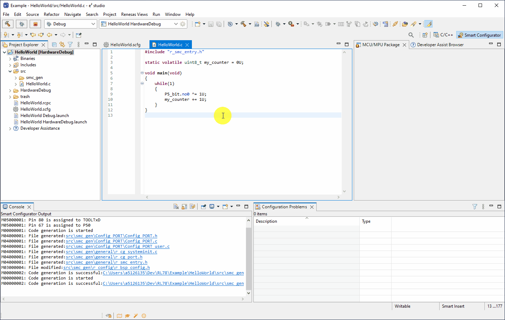
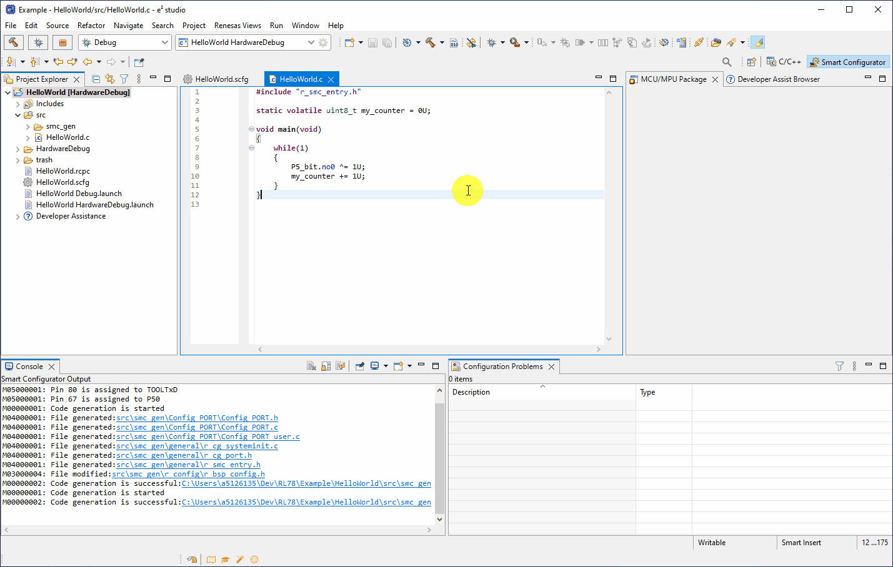
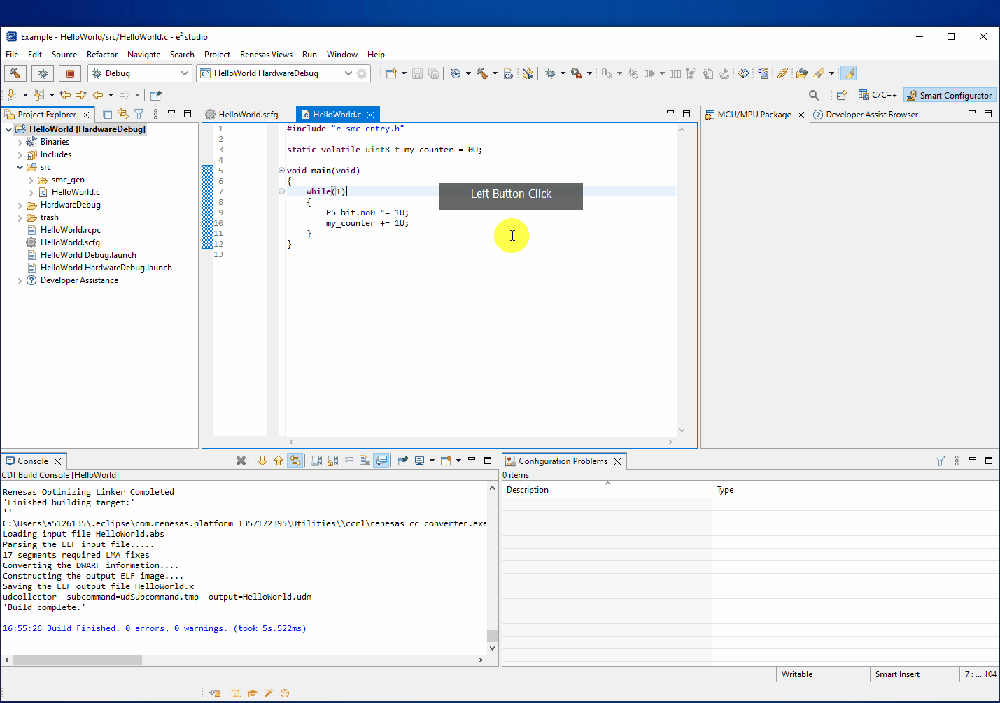
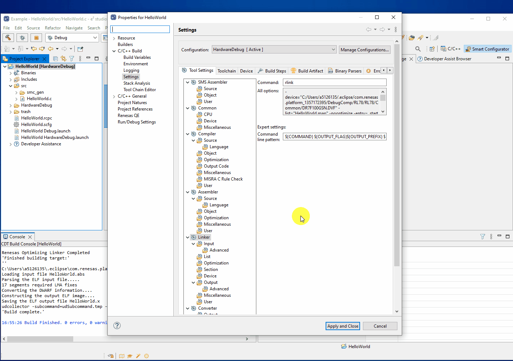

Here we will guide you through building a project for the RL78.
There are two methods of building a project.
We can explicitly [Right-Click] a project and click Build Project

Or we can build the currently active (selected) project by clicking on the build icon.

In both animations above the builds success was verified in the consol window, by analysing the build output.
Importantly if you do not have the RL78/G23 128p FPB hardware then you must perform the following:
[Right-Click] Project → Build Configurations → Set Active → Debug (Debug using GDB simulator)
This changes the build type to target the simulator instead of target based hardware debugging.
If you do have the RL78/G23 128p FPB hardware then you do not need to perform this extra step.
Build options such as optimisations, compiler lookup paths, linker settings etc. can be found by
[Right-Click] Project → Properties → C/C++ Build → Settings

From here all build options are available such as; compiler, assembler & linker flags, pre/post build command line steps, binary converter options and more.
What is a build configuration and how to change them, also by default one exists for each debug configuration.
Also for every build configuration, all build output/intermediary files are stored in the folder with the build configuration name.
A build configuration is, as the name implies, a specific set of build/make options for a given build type.
A typical example of this would be a "Debug" and a "Release" build - where for debugging you may want to disable all optimisations
and enable certain compilation defines/macros whereas in release, we may want increased optimisation and for all debug code to
be disabled (disable compilation defines/macros).
A developer can have as many build configurations as they wish for each project. When a project is built in a certain build configuration -
all output files and intermediary files are placed in a subfolder of the project with the build configuration name.
The build configurations can be managed by [Right-Click] Project → Build Configurations → Manage....
The build options described in step 5.2 can be applied to one or all build configurations by using the dropdown menu at the top of the properties dialog, like so:
